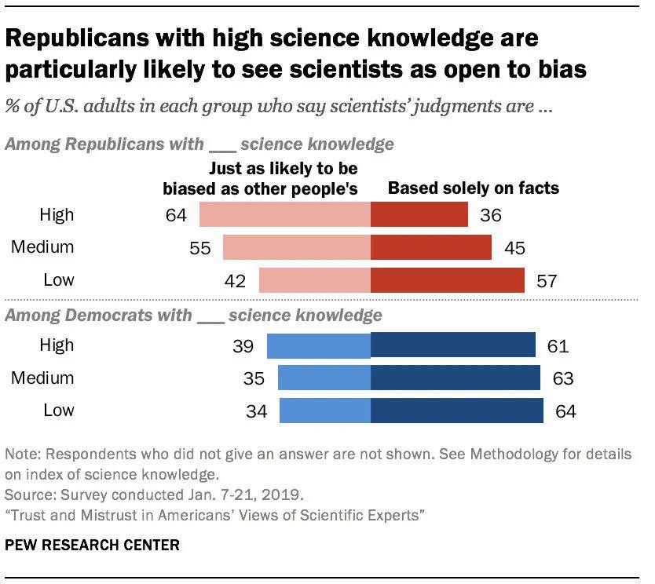

A Rational Critique of Academic Research
A Sequel to “Why Most Academic Research is Fake”
1. Expanding On Why Most Academic Research is Fake
While I like Blithering Genius’s essay, “Why Most Academic Research is Fake”, I personally feel that it should be expanded upon. Nevertheless, I recommend reading it first if you haven’t already, since this essay is intended to be a sequel.
For the record, there is still some valid, good-faith scientific research out there, but most of the academic “research” produced in more recent decades is either fabricated, dishonest, plagiarized, redundant, outdated, and/or useless. In many cases, the decline in high-quality academic research hasn’t been deliberate. Lower quality research is often a result of misaligned incentives, a failure to coordinate between academics, and/or poor methodologies. This essay shall elaborate on this in detail.
1.1. Fake Research, And What Counts As “Fake”
Before proceeding, we have to clarify that labeling anything as “fake” is a truth judgment that depends on a person’s belief network. What one person considers to be “fake” is not what someone else will consider to be “fake”. There is no fine line between “true and false” or “fact vs opinion”. Compiling a list of examples of “fake research” is thus subjective.
Most academic research produced in the 1800s and early 1900s probably wasn’t “fake”, though it does depend on the fields that we’re talking about. Fake research is more of a recent problem in academia, so when we’re labeling most or a lot of academic research as “fake”, we’re usually (but not exclusively) referring to more recently published research from say, 1980 to the present.
To say that “most” academic research is “fake” also implies that we can quantify how much of it is fake or not. I can’t precisely estimate, quantify, and judge every academic paper that gets published out there, so I don’t claim to know exactly how much of the current research being published is reliable. It probably also varies by fields, and it’s possible for papers to include a mixture of true and fake data, reasoning, and conclusions. However, we can generally say that most recent research in humanities (or human-centric sciences) is fake, redundant, or useless; most research in earth-centric sciences is true, fake, or questionable; and most research in STEM fields is a mixed bag. Even more generally, the quality of academic research has been declining over the past few decades.
For STEM fields, we should note that erroneous research often arises simply because the more theoretical and undiscovered areas of fields are so intellectually difficult to understand and investigate correctly, especially when there are many more ways to be wrong than there are to be right. It’s often necessary to make mistakes and learn from them before arriving at the right conclusion(s), so this is a reason why fake research is sometimes created (unintentionally). However, that doesn’t excuse intentional fake research from being created. For example, a scientist might knowingly conduct some fake research for a disprovable hypothesis in a field that’s currently at a dead end or writer’s block for further investigation. The motivation would be that there’s a lot of pressure on them to do research for the sake of doing research, even if it’s false or probably false.
Although we may not necessarily know how or why exactly, a lot of physical theories are probably wrong to some extent, since physicists currently don’t have a reasonable explanation(s) for making the different branches of physics cohere together. In the future, we may find out why in more specific detail. Notably, Sabine Hossenfelder has a YouTube channel where she’s given some of her thoughts on why many physical theories are wrong. For example, she’s explained her reasoning for why most particle theories of physics lead to nowhere, despite being likely to catch people’s attention.
It’s also worth mentioning that a lot of curricula taught in schools can be fake too, even though it’s not considered academic research (e.g. IB’s TOK class, which I took in high school). The amount of fake curricula definitely varies by school. I could publish a webpage of all the fake ideas that I was personally taught in school, but some of it is nit-picky, and I doubt that most people would find it to be interesting, so I won’t publish it.
The best rule is not to assume that because an academic paper says X, that X is true. You can find academic papers that say all sorts of (contradictory) things, and not all of them can be right. Pretty much anyone can find a paper that concludes what they want to believe, if they look for it. Instead, you should try to think about the type of evidence necessary to support a conclusion, and see if that evidence is presented. If you don’t see the required evidence, then the paper is probably “fake”. If an idea has trouble standing up to Street Epistemology questions, then that is also a red flag.
Read More: Sometimes Papers Contain Obvious Lies – Cremieux.
1.2. Why Fake Research Is Created
Blithering Genius’s essay accurately identified the main causes of fake academic research:
- Ideological Bias
- Perverse Incentives
- Social Circularity
- Naive/Fake Empiricism
- Statistical Manipulation (e.g. p-Hacking)
An idea doesn’t need to have an air-tight proof or solid reliable data to be the “scientific consensus” of the current era. It only needs to be the most vogue opinion, the winner of a popularity contest essentially. Since academia is so insulated and self-contained, the most popular ideas are often chosen for ideological reasons, especially in the humanities. Being supported by the academic consensus doesn’t confer being truthful.
But academics have to declare conflicts of interest, or else they will face retraction.
This doesn’t work in practice because the academic power structure and social hierarchy that is responsible for identifying and reporting conflicts of interests in papers also tends to have the same biases and conflicts of interests themselves. It’s often not possible for academia to force an academic to explicitly state the biases of their paper(s). No one within the academic social structure may be aware of the biases to begin with. Other times, if no one may have any incentives to point them out. Sometimes, people outside academia insist that there are conflicts of interests and biases within academic papers. However, academia dismisses the outsiders as being ignorant and unscholarly, so the problem fails to get addressed. So there’s no reason to believe that this requirement prevents biased research from being published.
Another reason why a lot of academic research is “fake” is because it builds off of false pre-existing ideas, even if the author is unaware that their starting assumptions are false. See: Rationality and Freedom.
But researchers aren’t always trying to confirm research. If you manage to challenge a paper, then this could prove to be one of the best things for your career.
To the contrary, it’s much easier to publish stuff that builds upon and confirms previous research, than to invent something new that overturns established work. That’s why most academics tend to do the former. Even then, challenging existing papers isn’t necessarily going to produce more factual research either. For example, some research only exists to be speculative and hypothetical, or to raise awareness of a potential cause or theory, even if it’s unlikely to be (entirely) accurate. The essay that the Pragmatopian and I wrote for Pathogen Hypothesis For Male Homosexuality is a good example of this.[1]
Some act academic apologists may argue that academics are focused on the truth, because they still frequently debate against each other. But they’re wrong because when they are debating against each other, they’re usually debating theory-specific or theory-internal problems. In other words, they’re still debating within the same frame of assumptions. In order for them to do actual research in many fields, they would need to expand the frame of assumptions. But most academics don’t want to expand the frame of assumptions, since that would de-legitimize all the “research” and papers that they’ve been writing for their entire careers. Instead, they’d rather argue over which assumptions they should use when quibbling about their stupid theory-specific problems. And often times when academic outsiders do try to make expand the frame of assumptions, they are labeled as so-called “illegitimate academic research”.
On my economics webpage, I identified multiple different types of planned obsolescence. One of them is Academic Planned Obsolescence[2], which is when academics dismiss better simpler solutions to the world’s problems and questions, in favor of fabricating fake, less efficient, and/or more complex ideas. The intention is to create an ever-lasting flow of academic research for them to publish, to satisfy the artificially high demand for research papers. For example, some academics might dismiss Georgism, so they can create hundreds or thousands of papers that endlessly speculate on the best taxation policy(ies) that society should use.[3] As another example, some academics might dismiss race realism, so that they can postulate about an endless number of hazily conceivable environmental and societal factors for why racial disparities exist. In both cases and many others, the best answers to the questions at hand are actually straight-forward. But if the academics were to ever expose the correct answers, then there would be no more research papers to write, and that would be the end of many of their research careers. This is similar to the conspiracy in the Restaurant at the End of the Universe, where Gag Halfrunt and a group of psychiatrists try to prevent everyone from discovering the Ultimate Question to the Life, Universe, and Everything, since it would be the end of their profession. Truth-seekers tend to seek simplicity, whereas complexity is better for promoting ideologies and publishing papers (because it gives people more pseudo-intellectual garbage to write about). Academia thus tends to reject simplicity in favor of complexity.
academic-recipe-for-intellectual-dishonesty.png
Related: Why Political Theory is Overrated - Shako’s Metaheuristics.
Making topics seem complex may also be done in order to rationalize an academic’s biases and beliefs. But if we’re interested in the truth, then we can’t appeal to complexity to justify what we want to believe. Even worse, most academics hide their biases, don’t acknowledge their biases (intentionally or unintentionally), or they just aren’t aware of their biases.
At this point, most scientific disciplines are mostly solving theory-internal problems that don’t make sense to anyone but the academics. Most academics aren’t focused on developing ideas that actually have predictive or explanatory power. If and when they do it, it’s only done in very rarefied circumstances for a handful of fields.
It’s also likely that humans have passed Peak Idea Production. If so, then this is yet another reason why the growth of factual Academic Research has slowed down significantly over the last half century. Since the supply of good ideas to discover is finite, ever-lasting academic progress is impossible. This is part of the general Stagnation of Modernity. Another reason why scientific progress has slown down is that we’ve (unintentionally) created a system encourages mediocrity and discourages novelty.
The methods used to create fake news are often used to create fake research as well. The establishment media rarely tell outright lies, but they often lie by selecting facts, images, interpretations, etc. to fit a preconceived narrative. The narrative comes first, and everything else is cherry-picked to fit the narrative. The process for writing academic papers often works similarly. If an academic already has a conclusion that they want to present, they may ignore everything else that should also be considered and/or rig the methodology to achieve the desired results.
Many researchers may also use the Sapir-Whorf Effect and provocative wordings to influence how people perceive their papers. Pretty much everybody does this whenever they present what they believe, but the first step to detecting this is to understand how language influences thought. Usually, people can detect some misleading phrases, while unwittingly letting others slip under their radar. Everybody could become much better at avoiding manipulation and manipulating others if they consciously understood the philosophy behind it.
Some people will read all of this and claim regardless that I’m wrong or that I’m biased against academia. Such people may not take my word for it, but they may be willing to listen to Sabine Hossenfelder, who is a former academic with a PhD in Physics:
|  |
Also see:
- I Was Asked To Keep This Email Confidential – Sabine Hossenfelder.
- Why most particle physics theories are wrong – Sabine Hossenfelder.
- Information, Statistics, and Links about problems in Academia by The Fallen Apollonian.
- Research Less Likely to Be True is Cited More.
- Why Most Academic Research is Fake, Explained with Graphs and Data – Sean Last.
- Junk Science is being used to Prop up DEI – Eric Kaufmann.
- Leaving the Cathedral – Ryan Faulk.
- The Problem With Science Communication by Veritasium (This video is mainly based on John P. A. Ioannidis’s paper, “Why Most Published Research Findings Are False”).
1.3. Faulty Data, Statistics, And Math
The replication crisis is another problem in many fields of science. For a study’s conclusions to qualify as knowledge, it must have predictive and explanatory power. If an experiment’s results cannot be replicated, then the conclusions don’t have predictive power. That means that the conclusions don’t count as knowledge, which suggests that the research ought to be considered fake. The replication crisis is thus further evidence of the prevalence of fake research.
(As an aside, the replication crisis is arguably less of an issue in computing science (minus the theoretical part), but only when computing scientists are required to submit their code with the paper. So you can run the code and get the same results as the author. Hence, it’s probably easier to replicate results in computing science than other fields.)
Many academic studies also fail to account for Regression to the Mean, thus contributing to the abundance of fake academic research and the replication crisis. Gwern has a great webpage that talks about all the different fallacies that occur when people fail to account for Regression to the Mean. A lot of results in sociology, epidemiology, psychology, and related fields are unreliable because they don’t even control for the variables that they think they control for.
See Also: Science Must Be Based On Philosophy.
The downloadable PDF, “Market Failures in Science”, talks about many other problems with academia and the papers that it produces. Some of these problems are already mentioned in Blithering Genius’s academia essay, but the paper talks about them in greater depth. However, there were two new problems that I thought were worth stating explicitly here. The first one is Mathwashing (the other will be discussed later):
Mathwashing: Scientists are incentivized to make their work as inscrutable as possible. Scientists often use overly complex mathematical or statistical methods to obscure problems from reviewers. This works because most reviewers will not admit to not understanding details of work they are reviewing. The harder it is to spot an error, the less foolish you are for having failed to spot it. Unreadable academic prose can also serve a similar obfuscatory purpose, though this seems to be a bigger problem in the humanities. – Milan Cvitkovic
To put simply, mathematical models are often overused in academia, despite lacking predictive power.
Gwern has also written about his thoughts on the different paradigms of statistics. He recommends that each of the different paradigms of statistics be taught more widely using principled approaches. Each paradigm has its strengths and weaknesses, and these advantages and disadvantages should be taught to people more clearly. Gwern also comments that Bayesianism makes its assumptions more explicit, and it seems that he would agree that it’s better than frequentism overall for that reason.
Also see: Are you Bayesian or Frequentist? - Cassie Kozyrkov | Video Version.
1.4. Science Must Be Based On Philosophy
Some academics may want to deny it, but there are many philosophical questions that implicitly underlie scientific inquiry. PhD stands for Philosophy Doctorate for a reason. “What counts as true/fake research?” is a philosophical question since it pertains to truth and knowledge. The best scientific theories and best criteria for judging them are also philosophical issues. Likewise, science and beliefs are ultimately about actions. We don’t create scientific theories just to explain what we observe. We use those theories to act in the world and do things that will benefit us. What benefits humans and what humans should do are philosophical questions.
However, science has to take a lot of assumptions for granted in practice. The scientific method is part of a frame of assumptions in which science takes place. It’s important to question to assumptions. But it’s less important once we’ve already decided upon them and need a mental framework for conducting scientific research and expanding knowledge. Nevertheless, faulty assumptions are a major cause of fake academic research. One of the greatest faulty assumptions used within the scientific method and process is the statistical framework that academics rely upon.
In the Good Criticisms section, Gwern wrote a paragraph containing a bunch of if statements about what counts as good or bad criticisms of academic research. However, it would be easier to read it as a bulleted list. What would count as a good criticism?:
- If a draft of a study was found and the claims were based on a statistically-significant effect in one variable, but in the final published version, it omits that variable and talks only about a different variable, one would wonder. Discovering that authors of a study had been paid millions of dollars by a company benefiting from the study results would seriously shake one’s confidence in the results.
- If a correlation didn’t exist at all when we compared siblings within a family, or better yet, identical twins, or if the correlation didn’t exist in other datasets, or other countries, then regardless of how strongly supported it is in that one dataset, it would be a concern.
- If a fancy new machine learning model outperformed SOTA by 2%, but turned out to not be using a heldout sample properly and actually performed the same, doubtless ML researchers would be less impressed.
- If someone showed an RCT reached the opposite effect size to a correlational analysis, that would strike most people as important.
- If a major new cancer drug was being touted as being as effective as the usual chemotherapy with fewer side-effects in the latest trial, and one sees that both were being compared to a null hypothesis of zero effect and the point-estimate for the new drug was lower than the usual chemotherapy, would patients want to use it? If a psychology experiment had different results with a passive control group and an active control group, or a surgery’s results depend on whether the clinical trial used blinding, certainly an issue.
- And if data was fabricated entirely, that would certainly be worth mentioning.
– Gwern
These are all inherently different going by some of the conventional views outlined above. So what do they have in common that makes them good criticisms?
The importance of various criticisms against academic studies is often unclear. Gwern proposes a pragmatic criterion: “What makes a criticism important is how much it could change a result if corrected and how much that would then change our decisions or actions: to what extent [a criticism] is a ‘difference which makes a difference’.” In the same webpage, Gwern also wrote an elaborate (yet incomplete) list of statistical issues that may affect the validity of various research studies. As he explains though, it’s really difficult to figure out which issues are the most important and in which contexts. He concludes that: 1. learning by experience is probably the only way to figure out the importance of each of these problems, and 2. probably almost no one has the right knowledge and experience for evaluating the importance for all of these kinds of statistics problems, errors, and biases.
Lastly, lots of academics don’t know how to write their papers in a manner that’s easily read by others. Part of the problem is that most academics are in a rush to publish their papers as quickly as possible, due to the strong pressure to publish or perish. This are a couple reasons why academic writing doesn’t tend to be comprehension friendly or easy-to-follow. One of the reasons why Blithering Genius’s content is so amazing is precisely because it’s written as clearly and as articulately as humanly possible, with little to no rhetorical or metaphorical language. This is something that seemingly most people are unable to do to some degree. To a great extent, the best way to write academic research papers is a philosophy question.
1.5. People Should Think For Themselves
Many academics insist that people who don’t have graduate or undergraduate degrees aren’t qualified to speak about intellectual topics that they’re interested in. That belief is just pretentious bullshit. Plenty of important and groundbreaking theories and discoveries were created as passion projects, often by people who were self-taught. Examples:
- Issac Newton’s physics theories (calculus, gravitation, motion).
- Michael Faraday’s Theory of Electro-Magnetism.
- Albert Einstein’s Special Relativity.
- Charles Darwin’s Theory of Evolution.
- James Hutton’s Theory of Geology.
- Henry George’s Theory of Land Economics.
- Silvio Gesell’s Monetary Theory.
- Et Cetera.
A majority of the most influential inventions of all time were also created outside academia. Many of these intellectual pioneers also made their discoveries without any formal education. I’m not saying that random people’s passion projects should be funded (I actually argue against this), but rather that a lot of scientific progress came from such projects, not from “legitimate research”. “Legitimate Research” is just whatever the academic bureaucracy decides is legitimate, regardless of however irrational it may be.
So, we don’t need to have studies to back up everything that we say. Sometimes, intuitions and causal explanations are sufficient. A good argument in five sentences will sway more people than a brilliant argument in a hundred sentences. A paper that is easily understandable is more valuable for making decisions than a paper that no one else can understand at all. People should think for themselves, rather than being second-hand thinkers.
When someone says “science teaches such and such” or “science shows such and such”, he is using the word incorrectly. Science doesn’t show or teach things. Experiments and Experience show and teach things. If someone says to you “science has shown such and such”, you might ask, “How does science show it? How did the scientists find out: How, What, Where?” You have as much right as anyone else, upon hearing about the experiments (but we must listen to all the evidence), to judge whether a reusable conclusion has been arrived at. If you can’t question experimental results or the claims of experts, then it’s religious dogma, not science. True science would let people nitpick and tinker with whatever they want to see if they can understand things better. It’s part of the scientific method.
1.6. Academic Research Often Backfires On Improving Society
Many academic fields have no clear benefits for humanity.
- The “benefit of humanity” explanation doesn’t work any better. Some scientific work has no conceivable relation to the welfare of the human race, most of archaeology or comparative linguistics for example. Some other areas of science present obviously dangerous possibilities. Yet scientists in these areas are just as enthusiastic about their work as those who develop vaccines or study air pollution. Consider the case of Dr. Edward Teller, who had an obvious emotional involvement in promoting nuclear power plants. Did this involvement stem from a desire to benefit humanity? If so, then why didn’t Dr. Teller get emotional about other “humanitarian” causes? If he was such a humanitarian then why did he help to develop the H-bomb? As with many other scientific achievements, it is very much open to question whether nuclear power plants actually do benefit humanity. Does the cheap electricity outweigh the accumulating waste and the risk of accidents? Dr. Teller saw only one side of the question. Clearly his emotional involvement with nuclear power arose not from a desire to “benefit humanity” but from a personal fulfillment he got from his work and from seeing it put to practical use.
– Ted Kaczynski, Industrial Society and Its Future
Additionally, a lot of academic research in STEM fields tends to accelerate technological progress. Many people (especially futurists) view this as a good thing, but it also worsens humanity’s current evolutionary mismatch. Likewise, research in human-centric sciences may be focused on creating and rationalizing social delusions and other ridiculous ideas. To an extent, this also worsens evolutionary mismatch, but in a different way. So even if some academic research may be seen as “productive” for advancing humanity’s technology, it may not necessarily be what’s “best” for humanity. The greatest problems of our times are social problems, not technological ones.
People who are optimistic about technology tend to have positive perceptions of academia, and people who have positive perceptions about academia tend to have positive perceptions about technology and futurism. Thus, a lot of techno-futurists don’t understand that a lot of research is fake or unproductive. I’ve noticed a tendency among them to cite recent news publications that exaggerate recently published academic research. These news articles and exaggerated academic claims give them hope that humanity will achieve techno-futurism someday, but they are unaware that the aspirations are unrealistic and the claims exaggerated. They need to learn that these claims are deliberately overstated to get people’s attention. These papers also serve the purpose of satisfying the endless demand for more research to be published, even if the research isn’t actually very high-quality, good-faith, or likely to be useful. The techno-futurists hold high opinions of academia because they view academics as the ones who will make their dreams come true, regardless of how unrealistic their beliefs and fantasies may actually be.
Many academics are bright, intelligent people. It’s unfortunate that so many of humanity’s brightest minds end up focusing their 20s and 30s on academia, instead of having talented children who could further improve society and its future. Social delusions, modern culture, and education systems have persuaded many such people to waste their youth. Many academics get so involved in their careers that they end up becoming biological failures who have no children at all. This has strong negative consequences humanity’s eugenic composition and demographics. To fix this, I’ve proposed that there should be a minimum age requirement for most people to enter academia, so that most people can put the reproductive years of their life to good use and build up their savings.
Also see: Nearly Half of All Masters Degrees Aren’t Worth Getting - Reason.com.
1.7. The Emphasis On Academic Research Degrades The Quality Of Teaching
The strong focus on academic research in universities has also had negative impacts on teaching. Professors who spend more time researching have less time to create resources, study materials, and plan lectures that would benefit their students more. So the more research a professor does, the worse their teaching tends to be. To make the problem worse, a lot of academics don’t care to teach and only care to do research, but they still teach classes anyway since there are few other options for academics to make money. In many cases, a university student’s performance in their classes depends more on the professor who taught the material, rather than the student’s willingness and ability to learn.
College rankings are unreliable and complete garbage.[4] For the aforementioned reasons, the number of academic publications a university produces is actually negatively correlated with its teaching quality. And yet, citations per faculty is still a metric that is commonly chosen for positively ranking colleges. Moreover, college ranking metrics often incentivize universities to compete against each other for making research and getting their faculty’s works cited. Unfortunately, it’s easier to do this when academics choose to publish dishonest research. There is thus a conflict between college rankings and intellectually-honest research.
Student-to-teacher ratios are not a good way to rank colleges either. Teacher-student ratios tell you how small a school’s classes are, but not how good the teaching is. Many classes are capped at 19 or 20 students only because U.S. News counts the number of classes with 20 or fewer. The result is that access to the best professors is restricted. Additionally, colleges have an incentive to make class sizes smaller so that they can create more bullshit teaching jobs to pay their bloated academic departments. Smaller class sizes also make tuition more expensive, since more professors have to be hired by the university.
How we educate people (and especially children) demonstrates what the ruling ideology of a society is. Educators often have a lot of power in choosing how and what they want to socialize the next generations to be. Academia and modern schools are mainly run by women, so they are also biased towards women. So I’d argue that the rise and ubiquity of public schools is a major reason why most developed countries have adopted more feminine traits. Read More: Academia is Women’s Work – John Carter.
1.8. Why Peer Review Doesn’t Guarantee Excellence
The First problem with Peer Review is the term “peer review”. In reality, all scientific papers that are written by anyone are in fact peer reviewed - in the sense that they are reviewed by their peers and colleagues. Whether intentional of not, the very label “Peer Review” conveys an inaccurate idea about what is being discussed. Nobody is against peer review; the debate surrounds the efficacy and honesty of “Peer Review” - with a capital P.
In addition, the word “peer” in Peer Review is redundant, because who would review the paper other than one’s peers if we’re operating at the cutting edge of science? If a researcher is among the top researchers in their field, and there is nobody generally considered to be above them in their overall knowledge, then the only possible reviewers could be their peers.
“Peer” is redundant, and everything is “reviewed” whether it goes through a formal journal system or not. And so the issue at hand is the journal system and the review boards of the journal systems specifically. Not some argument about reviewing vs not-reviewing work as if one side is against review. – Ryan Faulk, “Leaving the Cathedral”, pages 46-47
The idealistic view and role of peer review is be for highly qualified academics to rationally debate, review, and exchange constructive criticism with other academics. Unfortunately, compromised and perverse social, ideological, and financial incentives often prevent peer (pressure) review from functioning as it should. The modern problems of conformity are also related to why pure review fails to live up to its ideal.
Good peer-review is usually double-blind and involves actors from different countries. This kills off the special interests and such. Most of our great research comes from peer review.
It’s true that some of academia’s best research has come from peer review. These suggestions for improving peer review would probably help, but they definitely won’t be enough. Most papers that failed to replicate, most fraudulent studies, and most of the papers you’ve read that don’t make any sense all also successfully made it through peer review as well. Peer review is not a check for correctness, and because it’s so unreliable, it can’t be. It’s not possible for there to be only one (or a few) fact checkers, so it’s naive to view peer review as the highest status, ultimate decider of truthhood and falsehood.
Nowadays, peer review has become much less effective than it was in the past for multiple reasons.
- The volume of people publishing papers keeps growing faster than the growth of reviewers, so it’s increasingly more difficult for reviewers to review everything.
- AI technology enables academics to write papers, without doing any actual research or thinking.
- Most reviewers phone in. If they don’t, the editor might not ask again, because that’s more work to do.
- These days, a lot of actually meaningful science is done by cloistered megacorporation scientists that produce profits, while academics continue to play games, charades, and shenanigans that pander to compromised incentives. The filter effect is that many of the actually useful people and papers are now being made outside academia.
In many cases, science progresses one funeral at a time. After a major scientist dies, the publications of their collaborators decrease, while publications by their non-collaborators tends to increase. The implication is that the lifespan of powerful institutionally-anchored scientists prevents outside thoughts from becoming more accepted in academia.
Read More: Is Peer Review Neutral? – Werkat.
Something to consider is how Isaac Newton wrote the Principia Mathematica. Newton was born in 1643 and attended Trinity College in 1661 at age 18. Newton was regarded as a mediocre student. In 1665 the University shut down due to the plague, and Newton went home and, in private, wrote works on calculus, optics and the law of gravitation. Newton published very little between 1666 and 1687, when he published the Principia and laid out Newtonian physics.
Imagine if Newton was in a modern university system. As a mediocre student, he wouldn’t have gotten a professorship. If he did, he would have gotten it by around age 35. In the interim, he would have had to work of projects for a senior professor, and would have had to publish articles on a regular basis, ideally in prestigious journals, in order to remain competitive for a position.
In reality, what happened is Newton published a few articles on calculus and optics and laws of motion, never went through a formal “peer review” process, and really only published one big thing at the end. Now perhaps science is so complex that it’s impossible for a lone eccentric genius to contribute anything, perhaps being a key term - because we’d never know since it’s impossible for someone like Newton to ever do what he did today. In today’s system, Newton would be a mediocre student and that would be the end of his story.
He might have some crazy ideas that he’d post on a geocities page somewhere, along with pages on astrology and alchemy (which Newton also believed in – in fact, alchemy was his primary interest). His interest in those topics would discount his heterodox work on physics. Anyone who saw his website would just think he’s one among many cranks, then one day his geocities account would expire, and that would be it. – Ryan Faulk, Leaving the Cathedral, page 82
There’s no way Newton’s ideas would have made it through the (modern) academic system, which says a lot about how ineffective it is at focusing attention on good ideas.
As an aside, it would be productive if “peer-review” videos that respond to educational YouTube videos were more popular, similar to this one: Economist Fact-Checks Johnny Harris. Unlike academic papers, people (including the general public) actually watch YouTube videos because they’re more entertaining, they don’t use excessive jargon, and they aren’t compromised by the general problems of academia. From my own experience, “peer-review” response videos can be educational and fun to watch. I also believe that they would help reduce misinformation across the Internet. Often times, they frankly do a better job at doing what academia was supposed to do, even though they aren’t really created for that purpose.
1.9. The Generative AI Plagiarism Pandemic
With the advent of AI technology, there’s plenty of growing evidence that many “researchers” don’t read their own papers before submitting them. In fact, many peer reviewers don’t even read or review the papers that they are “reviewing”. Examples:
- This paper on batteries (now retracted) obviously had ChatGPT generate its introduction, and it also used duplicated images from another academic paper. Image
- This medical paper (now retracted) clearly had ChatGPT generate its introduction, and it also violated informed patient consent. Image
- This paper on solar panels shows that ChatGPT was used to generate part of the paper since <Regenerate response> is shown at the end of the introduction. Image
- This CS paper on spatial scenes used ChatGPT to generate its pseudocode in section 4.1. Image
- This paper on agriculture used ChatGPT to generate much of the paper, since unconventional terminology was used all over the place.
- While not an example of plagiarism, this paper made it through peer review, despite having AI-generated text, citations, and images placed inside it that were deliberately pseudoscientific.
- There are even news articles out there now that talk about how undeclared ChatGPT usage is leaking into scientific journals. Article 1, Article 2.
{kind=link}
{kind=link}
{kind=link}
{kind=link}
Certainly, the papers from this limited sample are not the only ones that have been cheating by abusing AI technology. It goes against the journal policies for them to use generative AI to help write papers, without disclosure. Even worse, these are only the papers that got caught using AI that I managed to find. I could probably find even more papers if I bothered to search pubpeer.com. In any case, the generative AI plagiarism epidemic is further evidence that most of today’s academics lack original ideas and honesty.
If peer review really was as prestigious as academics say that it is, then there are no excuses for why such glaring errors have managed to appear in so many published papers. Each of these papers had multiple writers, multiple reviewers, editors, a proofing stage, and some were featured in “prestigious” journals. At this point, it is unreasonable to believe that peer review accomplishes anything pertaining to the acquisition of knowledge. One ought to be skeptical and distrustful of people who are insistent about defending it.
Interestingly, this truthful academic study shows that the frequency of adjectives used in academic papers about AI radically shifted from 2023 to 2024. This suggests that a lot of academics have started using ChatGPT to add filler text to their papers between 2023 and 2024.
2. Other Types Of Unproductive Low-Quality Research
Fake research is common, but it’s not the only type of bad research in academia. Sometimes, research isn’t necessarily fake, but it’s still useless or unproductive in some way. Hence, it may be the case that the remaining ~40% of research in academia is not fake, but it still doesn’t improve society or humanity’s knowledge in any significant way. It’s important that we recognize and identify these types of research when evaluating academia and its role in society. If much of academia is focused on producing unproductive research, then that ought to be considered a waste of economic resources.
There is a lot of overlap between these types of unproductive research, but it’s still worth describing each of them, since they don’t always overlap. We have ordered our discussion of each of these types of research from the worst to the least bad.
2.1. Plagiarized Research
Plagiarized research is another serious problem in academia. It could be considered a sub-category of redundant research. For plagiarized research, the pretense of creating original research is fake, but the content itself of the plagiarized research may not necessarily be false.
The rise of AI-generated text in academic papers is a prime example of just how rampant plagiarism is in Academia.
A 2017 study showed that Wikipedia has a tendency to shape the language in science papers.
In How Widespread Is Plagiarism in Academia?, one academic estimates that 7-9% of all PhD dissertations are plagiarized, although it may vary by the field of study. As mentioned in the video, it’s often difficult to discern plagiarism due to false positives, false negatives, and the strong social ramifications of accusing someone of plagiarizing. In some contexts, it can also be difficult to write original language. For instance, it’s sometimes practical to copy things, like Methods sections, which may not vary much from paper to paper if the testing methods have not changed, or were kept the same for replicability. Regardless, there’s certainly a lot of plagiarism that occurs to boost academics’ social statuses, it’s a huge problem in academia, and more plagiarized papers may be spotted in the future with the advent of new AI technology.
I won’t comment much more on plagiarized research since I don’t know what works have been plagiarized, nor do I know the fields/topics/circumstances under which plagiarism is the most prevalent.
2.2. Redundant Research
We should clarify what we mean by “redundant”. Redundant Research isn’t necessarily fake, but it is unproductive. It is redundant and unproductive is to replicate things that are already well-established and widely accepted. If there are already a several dozen or so high-quality replication experiments out there for some phenomenon, then it’s probably not productive to create yet another replication experiment, especially if it’s not likely to contribute any new knowledge. In general, low-quality and/or poorly coordinated research is redundant. By contrast, replication experiments for questionable topics are not redundant. It is necessary to repeat experiments in order to prove that they can be replicated.
Alternatively, some experiments may be deliberately dishonest. Some researchers may deliberately replicate them to make a dishonest claim appear as if it’s true. Such research is better categorized as “fake”, rather than “redundant”.
The main cause of redundant research is that most academics and most academics fields are not organized into a larger structure that coordinates and defines their focuses and relationships, with relation to prior-existing research and other academics around the world. This results in a lot of duplicated, redundant, and lower-quality research. Too many academics are focused on competing against each other, rather than working together:
Scooping and duplicate work: Science wastes a lot of effort by not coordinating between groups. When scientists don’t coordinate it can lead to duplicate work. If two groups are interested in the same project, ideally they would divide up the relevant work between their members and share the credit. This often doesn’t happen because groups typically only publicize what they’re working on after they’ve finished and published the work. This leads multiple groups to do nearly identical work simultaneously. The first group to publish, “scooping” the others, usually gets all or most of the credit. Even Darwin thought this was a bad system.
Obviously we want some work in science to be duplicated: the lack of duplicate work is a cause of the replication crisis. But non-observational work like theory or method development gains almost nothing from groups scooping each other.
Why don’t scientists coordinate more? Partly because broadcasting what one is working on would let competitors free-ride on your ingenuity. They could even claim they were working on the same idea when they weren’t. Another reason is that it’s hard to evenly divide labor between groups. Plus the more authors are on a paper, the less credit each receives. If you publish before your competitor, you don’t have to share credit with them, though of course you might lose the race. At some career stages, having solo or majority credit for an idea matters a lot, like when working on a job-market paper. This can even prevent people from the same lab from collaborating with each other.
One way to prevent coordination failures are turf norms. Some fields like geology or parts of biology have norms about not working in areas (literally, for the geologists) that other people study. But forcing everyone to find a separate niche is inefficient: if everyone in a field thinks a particular idea is the most promising thing to work on, we want them all to be able to coordinate on doing so!
Based on an analysis of PDB submissions, Hill and Stein (2019) suggest that duplicate work doesn’t have a huge impact on the careers of scientists themselves, despite the waste of scientific effort. The same authors went on to study the impacts of competition on research quality, again using PDB data, with structure resolution as a metric for quality (Hill and Stein, 2021). It’s a great idea, and they present a very detailed model, but PDB crystallography is also an unusual “minigame” in science where groups are all trying to produce the exact same thing. In most of science, when you get scooped you pivot (often in a direction you don’t really care about), or dress your work up to look unique, or try to tack more on for novelty. People almost never publish purely duplicate work, unless the projects are so contemporaneous that they make it into the same “release cycle”. I don’t know how one could quantify that kind of inefficiency.
One solution to this problem is working in public, but that opens up opportunities for flag-planting, and researchers often find working in public embarrassing since flaws aren’t hidden. Another option would be a trusted neutral party to whom everyone could tell what they’re working on (along with appropriate proof of investment in the idea) and groups duplicating each other’s work could be put in touch. – Milan Cvitkovic
2.3. Out-Dated Research
Out-dated research is closely related with redundant research in a sense, but still different. Outdated research is often useless, compared to newer and more innovative methods.
This is also kind of depends on what gets considered “outdated”. For example, phonological optimality theory could be considered a simpler method for modeling language phonology compared to maximum entropy phonotactics. It’s not necessarily a completely outdated way of thinking about phonology if a more complex model isn’t necessary, although it is definitely less sophisticated and less accurate.
To be fair however, it is inevitable that some research will become outdated/obsolete rather quickly when new ideas are shared all over the world by brilliant minds who have done a lot of thinking, especially when the rate of the flow of information around the world is the fastest it has ever been in human history. Of course, this relates back to the causes of redundant research in the previous section. A more ideal version of Academia would find a way to coordinate and fix this.
Research is also more likely to become outdated if it isn’t of high-quality to begin with. A lot of research is done by graduate students who have limited knowledge of their respective fields, so they aren’t able to make the best research that they can, especially if they have time constraints, financial constraints, social constraints, and limited knowledge on what they can publish.
2.4. Useless Research
Useless Research is characterized by being undiscovered or uninvestigated (hence it’s not redundant or out-dated), but it still doesn’t improve human society by and large in any conceivable way. Labeling research as “useless” is a value judgment, and value judgments can change as we acquire more knowledge about the world. One could make the argument that much of the useless research out there may have a theoretical and yet undiscovered application that could benefit humanity in the future (e.g. many fields of applied mathematics), but that’s unlikely to be true for many things. If a research will never have any effects on anybody besides the academics who write and read the paper, then it’s probably useless research.
To clarify, “useless research” isn’t necessarily “bad”. Sometimes, “because I want to” is a perfectly legitimate reason to do anything, even if the action or research has no known practical applications. From a societal perspective, there’s nothing wrong with people making donations for people to do useless research or teaching for fun. However, a more functional society and government should never pay nor subsidize professors and other people to do research that doesn’t or won’t conceivably benefit society. The time used to conduct useless research can also have a lost opportunity cost for society, if the useless researcher would’ve been better off doing something else. Those are the two main problems with useless research.
People’s General Feelings Regarding Research Papers:
- Looking up research papers :)
- Reading research papers :(
- Sending an email to the person who’s wrote a niche paper 7 years ago, but was clutch to supporting your paper :)
- Getting a happy response email 5 months later from that same author feeling honored anyone read it let alone enjoyed it :D
- (always check the author and where they are now when you plan to use a paper)
3. Fixing Academia
So if the academic system is broken, then how do we fix it? I propose some ideas in the following subsections. They would do a lot to improve academia, but I’m also skeptical if they would be enough to fix everything that is wrong with it. Some of my ideas may even weaken academia, but this is a good thing if we want to replace it with something better. If anybody has any other ideas for improving how the academic system works or how we could replace it with a more efficient social system, then I would love to hear about it. You may consider messaging me from my contact page.
In July 2025, Blithering Genius posted “Answering Questions about the Academy”, which elaborates on the nature of fake academic research and what could be done to prevent it and reform academic institutions. It covers additional ideas and reforms that I hadn’t thought of.
3.1. Requiring A Minimum Age To Enter Academia
Everybody needs to have a source of income (or sufficient savings) for feeding themselves and their families, including academics. Unfortunately, it’s far easier to make fake research than it is to make real research. If it was easy to make real research, then everyone would do it, not just the exceptionally gifted. When an academic has to choose between: 1. being honest, not publishing any research, and jeopardizing their income and social status, and 2. being dishonest, publishing fake research, putting food on the table, and gaining social status, they’re often going to choose the latter option instead.
If most would-be academics are not smart enough to consistently make an endless stream of ground-breaking discoveries, then it would be better if they do something else as their main occupation instead. It simply doesn’t make sense to have so many people who make a living off of coming up with new ideas, especially when many fields of knowledge are past peak idea production. I thus propose that there should be a minimum age set for most people who want to do research in academia. Most people should be bared from doing academic research until they reach 40 or 50 years old, or whenever their reproductive age has ended. The fertile years of an intelligent person’s reproductive lifespan are the worst period in their lives for them to be doing intellectual research, even if they are the most tempting.
Exceptions to the age requirement can and should be made for extremely gifted people, e.g. Terrence Tao, Issac Newton, Albert Einstein, etc, since they such people have a proven ability to make groundbreaking discoveries during their 20s and 30s. Society is usually able to determine if someone is exceptionally gifted during their childhood, adolescence, and early 20s. For many of these gifted people, society would benefit the most by allowing them to do research as their main occupation. For most other people, society would be better off if they did other things to make a living. Cognitive ability probably peaks between 50 and 60 years old, so that’s another good reason to bar most people from doing research while they’re young.
Exceptions to the age requirement could also be made for fairly smart people who can prove that they have enough savings or will have a sufficient income to live off of and fund any research projects that they want to do, while they work in academia at a younger than usual age. If a person has enough money to live a comfortable life, then they probably won’t have any conflict of interest in producing fake research for the sake of getting attention and hence money.
Everyone else who wants to do academic research should instead focus on building up their savings (perhaps according to the FIRE movement) and having children while they are still young enough to be within their reproductive age range. If a person is truly smart, then they should be able to put their higher-than-average intelligence to work and use it to receive higher incomes than what most other people earn. Once they’ve finished having children and are ready to retire, they can live off of their own savings to do whatever research they want to do. (And of course, if a person has done some research for a few years or so, but they want to start making money again, they can always leave academia and rejoin the workforce.)
When academics are able to live off of their own savings (that they already made), they won’t have to worry about feeding themselves or putting a roof over their heads. Instead of choosing to make fake, unproductive “research” for the sake of making money and a name for themselves, they will be more motivated to focus on pursuing the truth instead. This is especially true if money is only given to truth-seekers, rather than paper pushers (as proposed in the next section).
This restriction would cause less academic papers to be published, but this would be a good thing since most academic papers are fake or unproductive anyway. More importantly, it would cause the quality of academic papers to increase.
Also, if funding for a major research project has to come out of researcher’s own pocket, then they will be more selective in conducting research and spending their time on things that are more likely to succeed. Few people would be willing to risk their life savings on research experiments that is unlikely to succeed, especially if they aren’t very important.
Additionally, even if a minimum age is set for entering academia, that doesn’t mean that people can’t independently study, think, or experiment on their own. As I wrote before, many of the best discoveries ever made were passion projects done with no formal education. It’s not necessary to join academia to conceive great intellectual ideas. With academia being the intellectual dead end that it is nowadays, people may just as well be more productive outside it. If requiring a minimum age to enter academia actually ends up weakening the influence of academia, then it may be for the better. In the Internet Age, it really shouldn’t be necessary for people to attend expensive overrated institutions, just to stand on the shoulders of giants and become cutting-edge experts in their fields of interest.
Currently, there is a strong negative correlation between education and fertility rates. Unsurprisingly, there is also a strong negative correlation between wealth and fertility rates. One reason for this is that academia usually isn’t very profitable for most academics, compared to most other jobs that they could do instead. Many academics also get so invested in their academic careers that they run out of time to have children before it’s too late. Combined, these factors (lower wealth and career investment) both cause academics to have fewer children. This is unfortunate when we consider how some academics are among society’s smartest, most talented people. However, the minimum age requirement would simultaneously encourage more smarter-than-average people to get jobs that pay better than academia, and it would also incentivize them to have children while they still can would thus increase their fertility rates. This would go a long way towards expanding the rationality of our society. When more smarter-than-average people are focusing on making money and doing productive things rather than writing pointless papers, it will probably have a positive effect on the economy, Western fertility rates, and eugenics in Western societies.
Some people may contest that having a more rational structure for preventing fake and unproductive academic research would make a minimum age requirement redundant and unnecessary. To some extent, this is true. However, a hypothetically more rational overseer for academia would still face the who-watches-the-watchers problem. If the ultimate watchers decide to permit fake and unproductive research, then the entire structure has failed to improve the quality of research. So, if requiring a minimum age to do academic research (for most people) would improve the quality of research, then this would favorably shift the academic social structure to focus on featuring academics who are more likely to pursue truthful research. The minimum age requirement could be a feature that helps reduce the troubles faced by the who-watches-the-watchers problem. The key point here is that a more rational academic structure and a minimum age requirement would both compliment and reinforce each other. Additionally, the minimum age requirement would still have the advantage of making more intelligent people more likely to focus on having children instead, rather than wasting their fertile years.
Also see: Nearly Half of All Masters Degrees Aren’t Worth Getting - Reason.com.
3.2. Research Funding Could Be Replaced With A Bounty System
As I propose on my economics page, the government should replace patents with a bounty system for rewarding people who make proven new discoveries. There are currently many unsolved mathematical and scientific problems that don’t have any monetary rewards for solving them. However, more people would be focused on solving them and doing real academic research if the government offers money to solve them. For this to work though, we’ll need to create the appropriate incentive structures. We only want to reward people who do real research.
The solution is that money should only be given to truth-seekers, rather than paper pushers. Some might argue that making unsuccessful discoveries can sometimes pave the way for more successful discoveries later on. This may be true to some extent, but as long as concessions are awarded for making failed research attempts, academics will continue to publish fake research. It’s easier to make fake discoveries, rather than real discoveries. So even if producing fake research provides smaller potential profit than making the definitive proof/discovery, academics will continue to publish fake research anyway. They will do this even if they personally know that the experiment, study, or research will probably be wrong before they ever start it, especially when they are dependent on doing so to make a living.
On the other hand, if we can only award the people who did the work that was needed to actually solve the problem(s), then fewer people will also do fake or unproductive research, since there will be monetary rewards associated with it. Just as importantly, more people will be incentivized to actually search for the solutions.
3.3. A Larger, Rational Structure For Organizing Research
There are a lot of fake and unproductive ideas out there that only lead to dead ends. Likewise, there’s also a lot of redundant research, since there’s no way to effectively coordinate academics together and many personal incentives for why they shouldn’t do so.
A more rational structure for academic research would prohibit people who want to build upon fake ideas or produce unproductive research. Obviously, the most immediate objection to this is that not everybody can agree on what is “fake” or “unproductive”.
To start, plagiarized research is probably the easiest to identify. The advent of AI technology in the 2020s has made it easier than ever to produce research that is plagiarized from large language models. On the other hand, it will soon probably make it easier to catch people who plagiarize other people’s works. There’s even AI tools for catch and counter people who use AI tools to aid their writing. It remains to be seen whether AI tools will be able to effectively and accurately detect plagiarism on a massive scale. My prediction is that it will succeed at doing this, especially for papers that were published prior to the public release of ChatGPT 3.5 in 2022.
Nathan Cofnas has written that we should find legal ways to remove dishonest academics and pseudoscholars from academia:
Promoting knowledge of the genetic cause of race differences destroys the premise of wokism, but this is not enough to attain victory. Our institutions are brimming with delusional–and in many cases mentally ill–true believing Red Guard thugs who were appointed to maintain the ideological status quo. Many of these people will fight to the gates of hell to defend the woke system, and won’t accept evidence for hereditarianism no matter what. We need to find legal ways to remove these people from positions of authority: get rid of fake grievance-studies departments at universities; revoke the tenure of pseudoscholars who were hired in job searches that illegally discriminated against whites, Asians, and men; mass fire the woke commissars in the state department; and so on. We have to leverage political power both to change the population of decisions makers and in order to deprive the woke of one of their most powerful weapons, which is civil rights law. The law might not be the ultimate cause of wokism, but as long as it’s illegal not to be woke, it will be far more difficult to reform our institutions. – Nathan Cofnas, Why We Need to Talk about the Right’s Stupidity Problem
Academic research should be primarily focused on things that might or will benefit humanity. Classifying “useless” research is probably also easier to agree upon, compared to other types of unproductive research. Hence, it should be less problematic to ban academics from pursuing it. If people do wish do to pursue it, then they should explore the what the gig economy has to offer them.
For preventing redundant and outdated research, we’ll need a large, rational, and global social structure that defines the limits and relationships of academic fields. It may even be a branch of global government. We’ve mentioned before how academics who are interested in similar research topics often avoid cooperating with each due to conflicts of interest. Just as governments solve problems of cooperation by heavily penalizing defectors, the global governing body will need to penalize academics who refuse to work together or share their findings. This may be harder to do since academics could always just hide their findings. But if it becomes difficult enough for academics to publish research within the academic system without cooperating with other academics, it could also cause the academic structure to fall apart, which is a good thing if we want to replace it.
Another idea is that every time a paper fails to have its results be successfully reproduced, the authors have to pay a fine. This does depend on whether the people who try to reproduce the study are accurately reproducing it correctly, but I suspect that this probably isn’t a problem in most cases. More generally, forcing academics to pay fines for producing fake research might be an effective strategy in general.
Additionally, people should be prevented from “researching” ideas that they’re not qualified to study. Naive people often assume that academics are the most qualified people in the world to speak on their respective fields of study. But I’ve seen plenty of examples where this isn’t the case.
As an example, I once knew a professor who got a PhD in linguistics at ~30 years old without ever taking a single calculus course. The PhD dissertation that she wrote uses stochastic optimality to study phonology and it was published a few years before Maximum Entropy Phonotactics was conceived and published. Unfortunately, she was not able to understand the MEP paper since it required calculus, and this was despite how she had a PhD, two master’s degrees, and a bachelor’s degree all in linguistics. It was hard to believe this when I heard it because the paper didn’t much calculus at all. With nothing more than my bachelor’s level linguistics knowledge and my knowledge from a math course that could be taken by high schoolers, my knowledge of linguistics had already surpassed my professor in some ways, and would enable me to write about a more complex and more accurate theory than the one that she used in PhD dissertation, if I chose to do so. Given her level of education, there really should be no excuse for why she doesn’t know basic math that high schoolers can do, especially when it’s so relevant to dramatically improving her field’s research and understanding. That is a rather extreme example, but I’m certain that there’s definitely many more examples of academics who are at least partially unqualified to study the fields that they’re specialize in. This highlights the importance of having a reformed social hierarchy in academia that could prevent such situations.
Lastly, this governing body could also ban academics from pursuing fake ideas. This will of course, be problematic if it deems the wrong ideas to be fake. But to an extent, this seems to be an argument that could be applied against any government: any government could potentially pass that laws that harm society’s interests. Nevertheless, this isn’t a sufficient argument against government, nor would preventing ideas from being explored within academia prevent ideas from being explored outside academia. If a rational global academic government set its foot in the ground and banned ideas that are contrary to the Pragmatosphere, then it would benefit nearly everyone as a whole.
3.4. Academics Should Focus On Improving Educational Resources
Wikipedia is one of the world’s foremost sources of information and knowledge sharing. It’s freely accessible, multilingual, incorporated into many digital assistants and LLMs, and offers a great introduction to many topics. Improving Wikipedia would be a more worthy pursuit than writing more useless academic papers that quibble over imagined, made-up problems. Academics should focus on improving Wikipedia and existing educational resources, rather than writing lots of useless papers that are unlikely to be read by anyone except other academics. I only have a bachelor’s in linguistics, but I can vouch that the linguistics articles on Wikipedia are highly underdeveloped and could use massive improvement.
One of the main reasons why academics are focused on writing academic papers instead of writing Wikipedia articles is that contributing to Wikipedia rewards lower status, compared to being able to claim citations or papers under one’s name in academia. This is partly because all contributions to Wikipedia are licensed under the CC BY-SA license, rather than default copyrights. In order for the linguistics and other topics on Wikipedia to become more informative and higher quality, editing Wikipedia needs to become higher status. Academia could be reformed by creating some system or set of contests to reward academics who contribute to making knowledge more easily accessible to other people.
Related: Wikipedia:Turning your biology research into a Wikipedia article.
I’d also argue that many STEM topics are poorly taught in primary, secondary, and post-secondary education systems. Instead of trying to investigate extremely difficult and/or non-existent problems, it makes more sense to figure out how to refine existing knowledge to make it easier for future students to learn and acquire. The more accessible knowledge becomes, the easier it will be for humanity to collectively understand and solve our unsolved problems.
3.5. The Gig Economy
As mentioned in the Useless Research section, it would be better if people who did “useless” research as their passion were funded by donations from other people who care about it. In the 2000s, the gig economy has become bigger than ever. There are lots of niche YouTube channels, freelancers, donation/fundraising platforms, smartphone apps, crowd-sourcing projects, and the list goes on. People who do research out of passion for their topics and fields of study are just as likely, if not more to yield better research.
If the power of academia is weakened, the gig economy for intellectual research and ideas could supplant much of it. Any resulting research may be less formal or less prestigious, but it would also become less expensive, less parochial, and more accessible for most people. My idea of “peer-reviewed videos” may have great synergy with expanding the gig economy.
An example of the gig economy expanding at the expense of academia is how Sabine Hossenfelder left academia to create a YouTube channel instead. Hypothetically, the future could have former academics who write papers and create videos outside of academia, while being funded by an audience. This could have some drawbacks and may fail to solve some issues (e.g. academics could still be focused on making papers/videos that catch people’s attention), but it may also have some benefits. The benefits would be amplified on a platform that doesn’t have an algorithm that centralizes what everybody can see, like what YouTube used to be like before 2013.
3.6. Other Solutions
Like everything else that needs to be fixed in modernity, fixing the culture and expanding rationality will always help. In my analysis of wokism, I’ve written some ideas that could be done to help end wokist ideology. Wokism is very well-entrenched within academia, so they would go a long way towards improving academia as well.
Unfortunately, the ability to be rational and intelligent is not equally distributed among humans. We need to make the best of what we have. For starters, we can replace demographic quotas with more meritorious policies to enable more qualified people to produce more truthful and higher quality research. Eliminating environmental causes of lower intelligence is another policy that we must pursue. The same goes for reforming the education system (that’s a topic for another essay). And of course, eugenics would help create more intelligent and responsible humans as well.
Rationality is key to rejecting the perceived value of college rankings, which are known for enhancing the incentives to produce fake research. A more rational culture that understands the limits of progress, technology, and science in general could also help reduce the demand for research papers, which would help reduce the “publish or perish” incentives in academia. Until then, some of the high demand for new research papers could be met by papers that build upon previous research that was neglected, especially topics pertaining to biological realism. Often times, findings that are several decades (sometimes even centuries) old are still more or less unknown to the general public. “News” doesn’t always have to be new. It just has to be new to the reader. So just because some findings may be “old”, that doesn’t that the public won’t enjoy reading papers that build upon them.
The rise of AI and LLMs might help diminish the demand for educated people, which may help reduce the influence of Academia.
Universities have to label students in some way, whether that’s homework, classroom tests, take home tests, attendance, essays, or projects. AI can do all of these things except for attend class and take tests. Practically anybody with an IQ of over 100 can use an LLM to pass all of his classes regardless of what their personality is like. If universities still want to function as credentialing institutions, they will have to adapt and rely more on offline testing to filter students out.
Will they do this? Presumably to an extent, but I doubt they will increase the salience of offline testing enough. The method by which students are graded is up to the professor, and professors don’t really have much of an incentive to make those systems effective.
Beyond the signaling critique, domain expertise in computing and STEM is now less valuable with the advent of AI. I don’t think that a firm today can ignore credentials and select employees for just IQ, but that might be possible now with the advent of AI. Domain expertise in physics, computing, chemistry, and genetics has never been easier to search for with LLMs, making even the knowledge that universities pass on less effective.
Admittedly, in the old days, people predicted that the internet would make higher education obsolete because anybody could look up anything. Which did not exactly pan out. But AI doesn’t just know things, it can do things: most importantly coding and writing, the core skillset of 95% of white collar jobs.
This will not make university degrees and selection obsolete. Prompting and interacting with an LLM is still a skill: it requires people to read and write, which probably correlate even more highly with intelligence than the execution of specific technical tasks. – Sebastian Jensen, “Academia’s Prestige Will Nosedive Within 50 Years”
Sabine Hossenfelder once released a video with her suggestions on doing more accurate research. Her points can be summarized as follows:
- Have reasonable expectations.
- Keep track of what you do and don’t understand.
- Acknowledge your own biases.
- Seek Review Articles, and review journals that specialize in Review Articles.
- Seek Meta-Reviews
Additionally, it is important to recognize that every measurement and result has an uncertainty associated with it. Good analysis talks about this. The press doesn’t. They gloss right over the error and uncertainty analysis any good scientist does. Because if you don’t, no one is going to take your work seriously. That means wild results that have massive uncertainties can be hyped up by press that doesn’t understand this fundamental part of science.
Much of this uncertainty occurs because more science is inferred than people tend to realize. Astronomy is a great example. Some think people really believe that “they discovered a new planet” involves the researchers pointing a telescope at an area, looking in, and going “Yup, there it is!” But planet searching is much more complex than this in modern times. A lot of discoveries involve a chain of inferences and assumptions: if this model is right, then if we see this, then that means this condition has to be true, which means this event B is happening and…. This is thus critical importance on the initial assumptions and hypotheses for the result to be correct. The ability of any of these hypotheses, assumptions, and conditions to be true or false adds a lot of uncertainty to scientific discoveries.
Some of the other problems with conducting and evaluating academic research can be fixed by studying epistemology. In an academic context, this would mainly include understanding the Abyss and its implications, the subject-object dichotomy and its implications, and the flaws of frequentist statistics, among other things. Seeing the Abyss is probably the most important out of all these. As Blithering Genius once said, “The gateway to a rational community is the Abyss.”
Footnotes:
However, we were honest in the essay when we clearly stated that we don’t believe that it’s the main cause of homosexuality. Including a disclaimer is much more honest than what a lot of Academics would do.
Based on its name, it might seem intuitive that Academic Planned Obsolescence would only produce outdated research, but it can also be used to produce fake and/or redundant research just as easily.
In fact, Neo-Classical Economics was created and funded by rich land barons to keep Georgism out of academia. See: Neo-Classical Strategem As A Strategy Against Henry George
The same goes for basically all “best of” rankings in general.